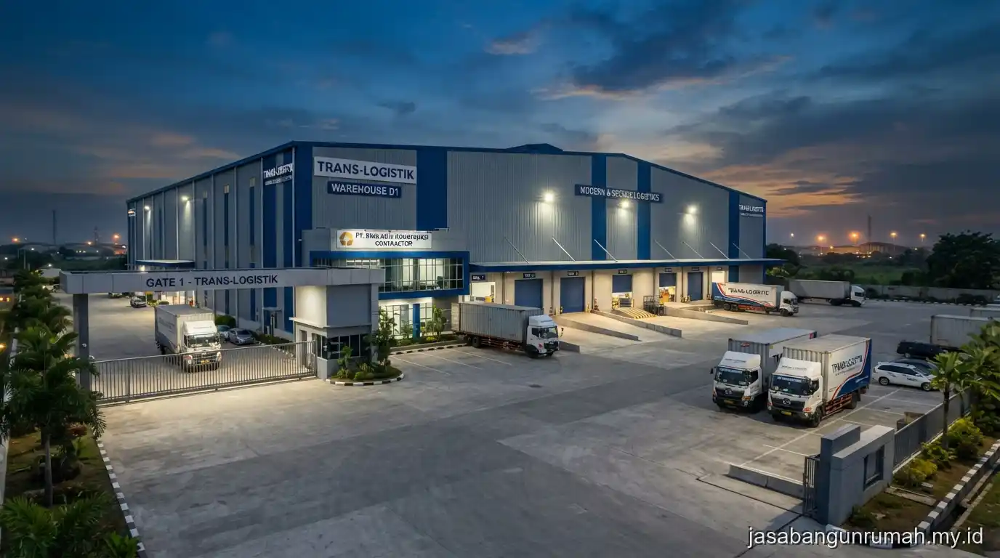

Daftar Isi
Jasa kontraktor bangunan Tangerang melayani pembangunan ruko, gudang, dan kantor kecil dengan tim yang berpengalaman menangani bangunan komersial skala menengah ke bawah secara efisien dan tepat waktu.
Apa Saja Jenis Bangunan Komersial yang Dilayani?
Layanan mencakup pembangunan ruko dua hingga tiga lantai, gudang penyimpanan dengan bentang atap lebar, serta kantor kecil untuk kebutuhan operasional bisnis skala menengah ke bawah.
Setiap jenis bangunan komersial memiliki kebutuhan struktur yang berbeda, misalnya gudang membutuhkan bentang kolom lebih lebar untuk area penyimpanan barang.
Sedangkan ruko lebih menekankan efisiensi ruang vertikal untuk fungsi usaha di lantai bawah dan hunian atau kantor di lantai atas. Tim kontraktor akan menyesuaikan sistem struktur dan material berdasarkan fungsi spesifik bangunan yang akan digunakan oleh klien.
Bagaimana Proses Pengerjaan Ruko, Gudang, atau Kantor Kecil?
Proses pengerjaan dimulai dari survey lokasi dan diskusi kebutuhan fungsional bangunan, dilanjutkan dengan penyusunan gambar kerja dan Rencana Anggaran Biaya, kemudian pelaksanaan konstruksi sesuai jadwal kerja yang disepakati dalam kontrak.
Untuk proyek gudang, tahap awal biasanya mencakup analisis kebutuhan bentang struktur dan kapasitas beban lantai sesuai jenis barang yang akan disimpan.
Untuk ruko dan kantor kecil, perhatian lebih difokuskan pada tata letak fungsional antara area usaha, sirkulasi pelanggan atau karyawan, serta kebutuhan instalasi listrik untuk peralatan operasional bisnis.

Apakah Tersedia Garansi Struktur untuk Bangunan Komersial?
Garansi struktur juga berlaku untuk proyek bangunan komersial seperti ruko dan gudang, dengan cakupan pada elemen struktural utama seperti kolom, balok, dan rangka atap apabila terjadi kegagalan akibat kesalahan pengerjaan.
Bagi pelaku bisnis, kepastian garansi ini penting mengingat bangunan komersial biasanya digunakan secara intensif untuk operasional harian, sehingga kegagalan struktur dapat berdampak langsung pada kelangsungan usaha.
Detail cakupan garansi sebaiknya dicantumkan secara tertulis dalam kontrak kerja sebelum proyek dimulai.
Berapa Kisaran Waktu dan Biaya Pengerjaan Bangunan Komersial di Tangerang?
Waktu dan biaya pengerjaan bangunan komersial bergantung pada luas bangunan, jumlah lantai, serta kompleksitas struktur yang dibutuhkan, dengan proses awal dimulai dari survey lokasi untuk menyusun estimasi yang lebih akurat.
Wilayah layanan mencakup Tangerang Kota, Tangerang Selatan, dan Kabupaten Tangerang, dengan tim yang dapat dijadwalkan untuk survey lokasi setelah permintaan awal diajukan oleh calon klien.
Bagi developer atau pelaku bisnis yang membutuhkan kontraktor berpengalaman menangani ruko, gudang, atau kantor kecil, dapat hubungi jasa kontraktor bangunan tangerang profesional untuk memulai proses survey dan penyusunan estimasi biaya sesuai kebutuhan proyek.